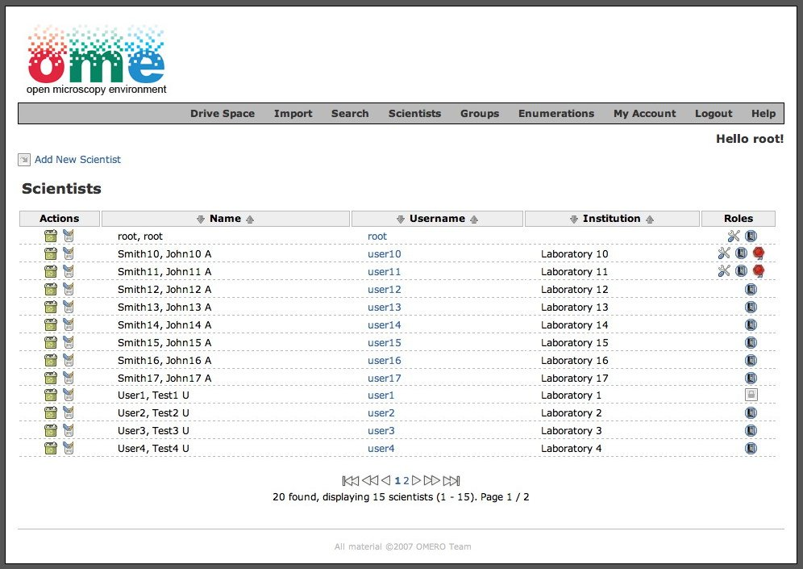

OMERO.webadmin User Guide
| Table of Contents | Up: 4. How to do ...? | Next: 4.2. How to manage users? | Down: 5. Troubleshooting |
4.1. How to log in?
The Login page gives the access to the application. In order to connect to an OMERO server, the user has to specify:
- the name of the server: field Hostname ;
- the port used: field Port ;
- a username: field Login ;
- a password: field Password .

|
| Figure 4.1-1 : Login Form |
NB
Usernames are case sensitive, so donald
would be a different user from Donald.
After log in you can see main view:
|  |
| Figure 4.1-2 : Main view |